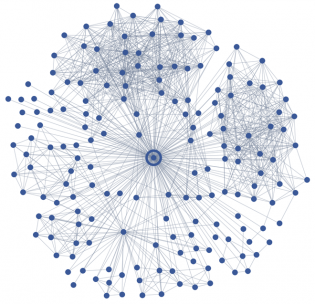

Classificação
Critérios
Essa página tem como objetivo manter atualizada a tabela de pontos dos contests do GEMA.Os pontos são distribuídos para cada participante por contest, de acordo com a seguinte tabela:
| 1 | 200 |
| 2 | 180 |
| 3 | 160 |
| 4 | 150 |
| 5 | 140 |
| 6 | 135 |
| 7 | 130 |
| 8 | 125 |
| 9 | 120 |
| 10 | 115 |
| 11 | 110 |
| 12 | 105 |
| 13 | 100 |
| 14 | 95 |
| 15 | 90 |
| 16 | 85 |
| 17 | 80 |
| 18 | 75 |
| 19 | 70 |
| 20 | 65 |
| 21 | 62 |
| 22 | 59 |
| 23 | 56 |
| 24 | 53 |
| 25 | 50 |
| 26 | 47 |
| 27 | 44 |
| 28 | 41 |
| 29 | 38 |
| 30 | 35 |
| 31 | 32 |
| 32 | 29 |
| 33 | 26 |
| 34 | 23 |
| 35 | 20 |
| 36 | 17 |
| 37 | 14 |
| 38 | 11 |
| 39 | 8 |
| 40 | 5 |
| 41 | 2 |
| >41 | 1 |
Faltas
Cada participante terá sua pior pontuação descartada automaticamente. Caso um participante deixe de participar de mais de 1 contest, ele perderá pontos (por cada contest), de acordo com a tabela:| 2 | -30 |
| 3 | -70 |
| >3 | -100 |
Provas em time
A pontuação das provas em time considerará que os membros do time ficam empatados em 3 posições consecutivas. A pontuação do time seguinte começa à partir da posição do time anterior + 3.Tutoriais
- Grafos
Grafos
Como percebi que muita gente têm tido dificuldade, resolvi escrever um tutorial sobre grafos. Pretendo cobrir com esse tutorial, possivelmente aos poucos:
- Representação
- Busca em Profundidade
- Busca em Largura
- Árvores
- Alguns problemas clássicos: coloração, menores caminhos, profundidade, componentes conexas.
1. Representação
Um grafo é um conjunto composto por vértices (ou nós) e arestas. Existem várias situações que podem ser representadas utilizando grafos: amizade (nós são as pessoas e as arestas são as relações), labirintos (nós são as interseções e as arestas são os corredores entre elas), entre muitas outras. Um exemplo de modelagem em grafos pode ser vista na figura abaixo:  Esse grafo é um subgrafo da rede social do Facebook, onde os vértices são usuários da rede e as arestas são relações de amizade. Quem ficou interessado no exemplo, pode encontrar mais detalhes no artigo Romantic Partnerships and the Dispersion of Social Ties: A Network Analysis of Relationship Status on Facebook .Vamos voltar à idéia básica de grafos. Considere o grafo abaixo. Esse grafo possui 3 nós e 2 arestas: uma aresta do vértice 2 para o 1 e outra do vértice 2 para o 3. Suponha que essas arestas são não-direcionais, ou seja, representam alguma relação mútua. Como representamos esse grafo?
Uma opção é utilizar uma matriz de adjacência. Nesse caso, utilizamos uma matriz N x N para representar um grafo com N vértices. Em cada uma das linhas, a entrada i,j é 1 se há uma aresta do vértice i para o vértice j, e 0 caso contrário. Caso as arestas possuam algum valor, ao invés de 1 utiliza-se esse valor. No grafo do exemplo, a matriz de adjacência seria
| 1 | 2 | 3 | |
| 1 | 0 | 1 | 0 |
| 2 | 1 | 0 | 1 |
| 3 | 0 | 1 | 0 |
Alguns detalhes desse código:
- Memset : função da biblioteca padrão para inicializar um bloco de memória. Geralmente utilizado para inicializar vetores com 0 ou -1. Cuidado ao utilizar outros valores: The value is passed as an int, but the function fills the block of memory using the unsigned char conversion of this value.
- Espaço: O espaço utilizado é proporcional ao
número vértices ao quadrado:
. Esse espaço é utilizado independentemente do número de arestas no grafo. No grafo do exemplo, utilizamos o espaço de 4*4 = 16 inteiros (são 3 vértices, mas não utilizamos o índice 0 nesse caso), mesmo que só existam 4 (2 arestas bi-direcionais).